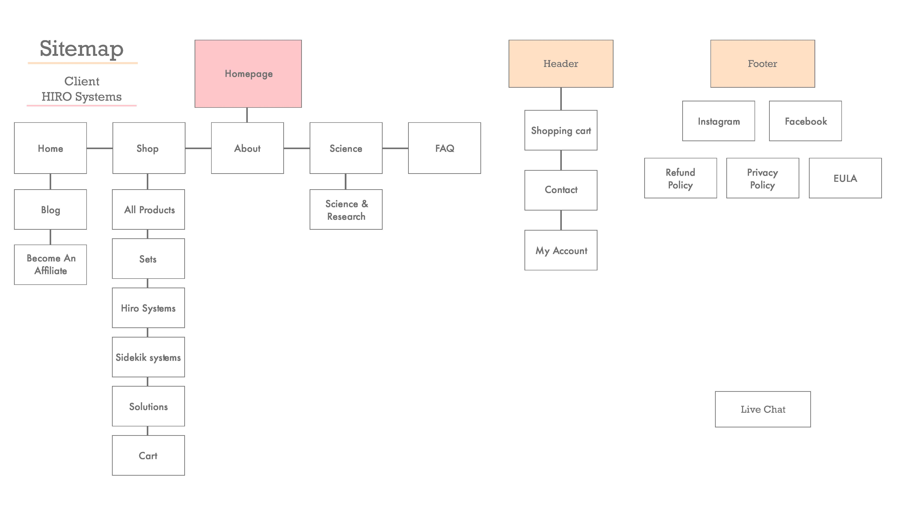
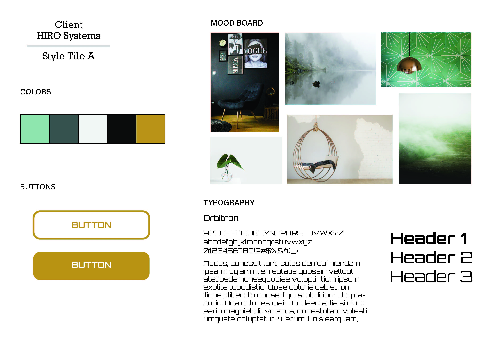

Hiro Systems Website Redesign
A fresh and clean redesign for a sanitization company. May your site take on a refreshing look with purpose.
Step 1
I began this redesign project with a simple sitemap, allowing me to see the possible areas or sections that would need designing.
Step 2
Then I created a style palette, still following the company's style guide. Although the green color was not really used in the final designs, it was to convey the feeling of a natural and eco-friendly product.
Step 3

Next was the wireframe, I took all of the content from the original homepage and laid it out in a more structured and comprehensive layout.
Step 4

Lastly, I plugged in all of the typography, colors, and images to create the final design for the project.